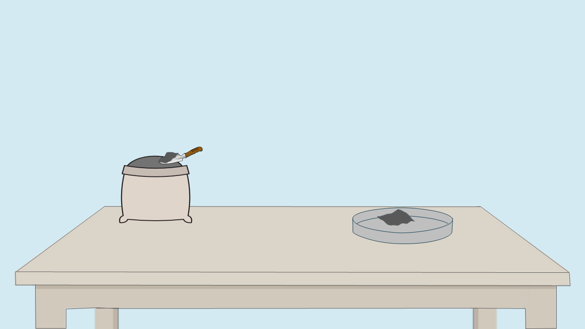

Step 1: Sample Preparation
About this step:
In this step, we will prepare the cement sample for chemical analysis. This involves grinding the cement sample to a fine powder and ensuring it is properly dried and stored to prevent contamination.
Proper sample preparation is critical for accurate determination of the chemical composition of cement.
Click on the cement sack to begin sample preparation.


👇